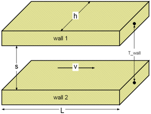
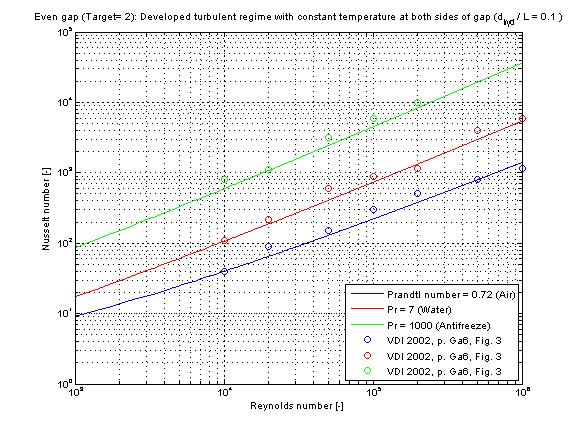

Calculation of the mean convective heat transfer coefficient kc for a developed turbulent fluid flow through an even gap at heat transfer from both sides.
There are basically three differences:

The mean convective heat transfer coefficient kc for an even gap is calculated through the corresponding Nusselt number Nu_turb according to Gnielinski in [VDI 2002, p. Gb 7, sec. 2.4]
Nu_turb =(zeta/8)*Re*Pr/{1+12.7*[zeta/8]^(0.5)*[Pr^(2/3) -1]}*{1+[d_hyd/L]^(2/3)}
where the pressure loss coefficient zeta according to Konakov in [VDI 2002, p. Ga 5, eq. 27] is determined by
zeta = 1/[1.8*log10(Re) - 1.5]^2
resulting to the corresponding mean convective heat transfer coefficient kc
kc = Nu_turb * lambda / d_hyd
with
| cp | as specific heat capacity at constant pressure [J/(kg.K)], |
| d_hyd = 2*s | as hydraulic diameter of gap [m], |
| eta | as dynamic viscosity of fluid [Pa.s], |
| h | as height of cross sectional area in gap [m], |
| kc | as mean convective heat transfer coefficient [W/(m2.K)], |
| lambda | as heat conductivity of fluid [W/(m.K)], |
| L | as overflowed length of gap (normal to cross sectional area) [m] , |
| Nu_turb | as mean Nusselt number for turbulent regime [-], |
| Pr = eta*cp/lambda | as Prandtl number [-], |
| rho | as fluid density [kg/m3], |
| s | as distance between parallel plates of cross sectional area [m], |
| Re = rho*v*d_hyd/eta | as Reynolds number [-], |
| v | as mean velocity in gap [m/s], |
| zeta | as pressure loss coefficient [-]. |
Note that the fluid flow properties shall be calculated with an arithmetic mean temperature out of the fluid flow temperatures at the entrance and the exit of the gap.
The mean Nusselt number Nu_turb representing the mean convective heat transfer coefficient kc in dependence of the chosen fluid flow and heat transfer situations (targets) is shown in the figure below.
